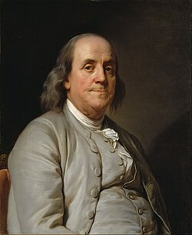

Бенджамин Франклин
Бенджамин Франклин (Benjamin Franklin) — американский учёный, изобретатель, политик и один из отцов-основателей США. Хотя он не формулировал законы сохранения в явном виде, его эксперименты с электричеством заложили основы для понимания природы электрического заряда и его сохранения. Франклин ввёл понятия положительного и отрицательного заряда, что стало важным шагом в развитии электродинамики.
Краткая биография Бенджамина Франклина
Бенджамин Франклин родился 17 января 1706 года в Бостоне, штат Массачусетс, в семье ремесленника. Он был пятнадцатым ребёнком в семье и получил лишь базовое образование, но с ранних лет проявлял интерес к чтению и самообразованию. В 12 лет он начал работать в типографии своего брата, где освоил печатное дело и начал писать статьи. В 1723 году Франклин переехал в Филадельфию, где основал собственную типографию и стал издавать газету. Он быстро добился успеха как издатель и писатель, а также активно участвовал в общественной жизни. В 1731 году он основал первую в Америке публичную библиотеку, а позже — Пенсильванский университет. Франклин увлекался наукой, особенно электричеством. В 1750-х годах он провёл серию экспериментов, включая знаменитый опыт с воздушным змеем, чтобы доказать, что молния — это форма электричества. Он изобрёл молниеотвод, который спас множество зданий от пожаров, и ввёл понятия положительного и отрицательного заряда, которые используются до сих пор. Помимо науки, Франклин играл ключевую роль в политической жизни США. Он был одним из авторов Декларации независимости и Конституции США, а также участвовал в переговорах с Францией во время Войны за независимость. Бенджамин Франклин умер 17 апреля 1790 года в Филадельфии. Его наследие включает не только научные открытия, но и вклад в образование, политику и общественную жизнь.